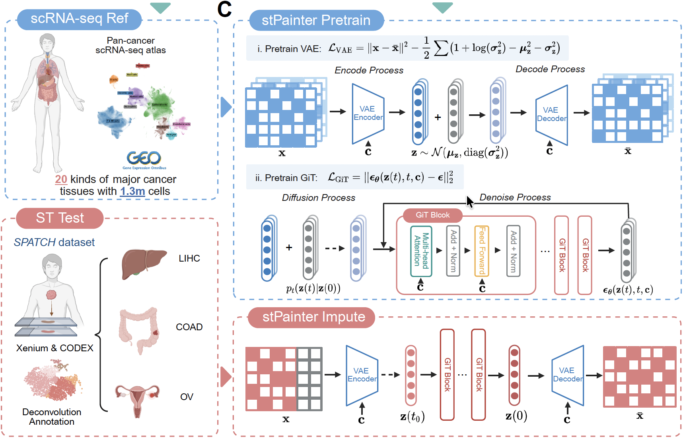
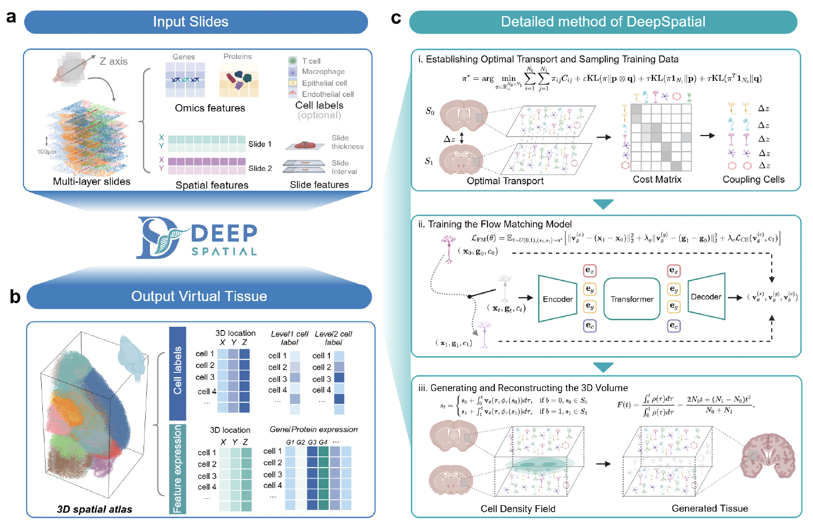
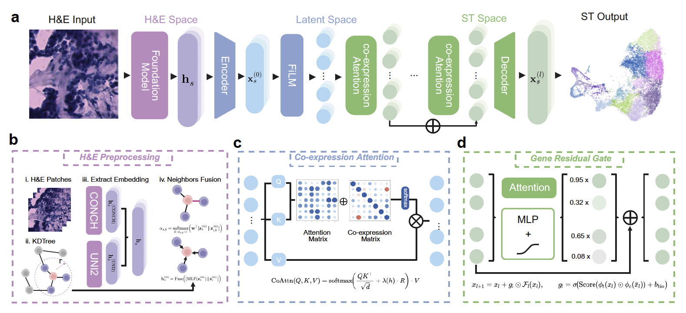

Nature Communications · 2026
We develop computational methods that turn complex molecular measurements into biological insight.



We work at the intersection of artificial intelligence and the life sciences — building intelligent tools that decode biology and reveal new biological insights hidden in complex data.
We build intelligent methods that enhance, reconstruct, and infer from complex omics data — turning sparse measurements into rich, usable signal.
We use these tools to ask new questions — uncovering cell states, tissue architecture, and disease mechanisms hidden in the data.